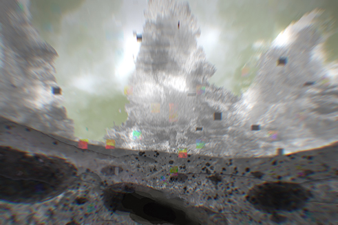

Extinction Report:
- Earth Similarity: 90.7564%
- Planet: Vens
- Human Era: 2520 CE
- Cause of extinction: Pollution caused the collapse of the planet's biosphere. Acid rain and high temperatures made the planet's surface conditions no longer suitable for any Earth-like life.
- Surface Gravity: 9.602 m/s2
- Surface temperature: average 20°C
- Surface area: 510,072,000 km2/li>
- Volume: 1.08321×1012 km3
- Mass: 6.97237×1124 kg
- Biosphere: The planetary biosphere has collapsed due to heavy pollution, and microorganisms have died completely.
- Climate: High altitudes, plains and low altitudes, perennial sulfate acid rain, disrupted seasonal systems.
- Geography: 85% of the surface is covered with water, the same mountainous characteristics as D0, the distribution of continents and oceans is 80% similar to what it was 500 years ago, and sulfuric acid rain causes potholes on the surface of the land, which can range in size from 2 meters to 3 km.
Journal-1
I reached the first parallel dimension, which I have named D1, and have now traversed 10 km without any life signs. The surface is riddled with potholes, the largest one I have seen so far being 300 meters in diameter.
Journal-2
It started raining seven hours later and tested as a highly acidic sulfuric acid rain. Also, acid rain is the cause of surface pits. The formation of this sulfuric acid rain is closely related to human pollution. I am not hopeful about the chances of human survival on land, and it seems that I should change the direction of exploration to the underground.
Journal-3
After exploring 3,000 meters underground, I found a survivor's base. Still, it was so full of human bones, and 60% of the equipment was inoperable that I could conclude that there was no survivor after exploring the last corner. Based on the broken paper records and the partially functioning computer, the reason for the base's destruction is famine. After the overexploitation of nature and pollution, the climate and ecosystem went out of control, and all edible substances became extinct. These factors drove the surviving humans underground.
Journal-4
On my second search of this base, I found a digital family photo, and according to the electronic file, the last administrator found the child's mouth and body covered in flesh and blood and no sign of her parents.
Journal-5
I explored 135 survivor bases and confirmed the extinction of D1 humans races.